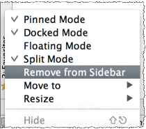

Did you know that you can remove just those tool window buttons you don't currently need?
It's quite easy to do - just right-click the button you want to hide, and on the context menu choose Remove from Sidebar .
